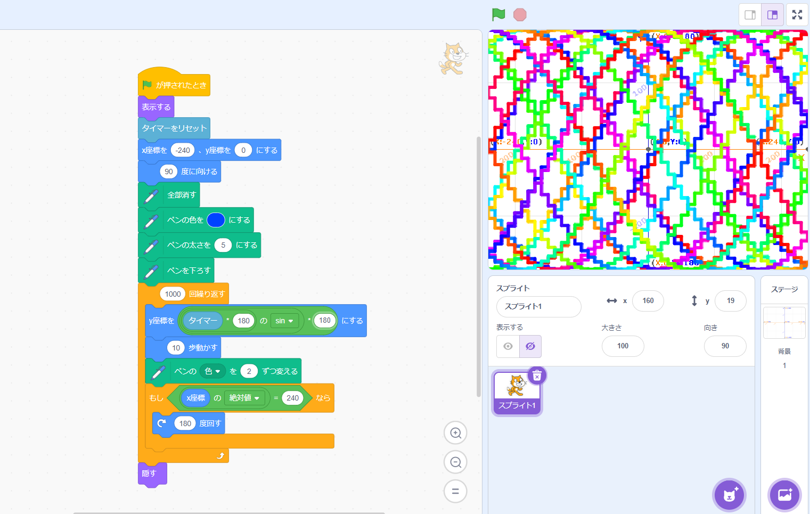
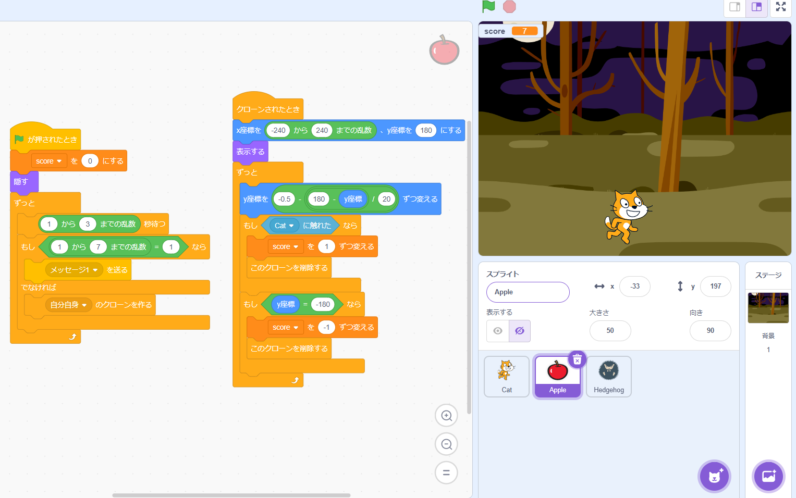

1週目のレポート ： 公大高専１年実習I-1
1b班39番 Nyayuta1060
第1週目
1-1 サイエンスアート

1.内容
スクラッチを使って線を書くプログラムを作成した。
Scratchでの基礎操作を学び、猫の軌跡を用いて線を描いた。
2.感想
タイマーとsin波を用いた模様を作成した。結果だけ見れば描くことができたが、一回の描画に時間がかかりすぎるため、
今後機会があれば効率化も意識したいと考えた。
1-2 ゲーム

1.内容
ループやif文を用いて簡易的なゲームを制作した。ifを用いて矢印キーの押下を検出し、
その検出スクリプトをループでくくった、
2.感想
幼いころからScratchの使用経験があったため、クローンや速度制御、乱数を用いてよりゲーム性を持たせることを意識した。
1-3 ホームページ作成
私のホームページ
1.内容
GithubのForkを用いて雛形を入手し、それを編集することで自身のホームページを作成した。
2.感想
Gitは今後も多用することになると思うため、より深く使い方を学んでいきたいと考えた。
また、htmlは少ししか触れないため、これから学んでいきたいと考えた。
各ページへのリンク
1週目のレポート
2週目のレポート
3週目のレポート
私のホームページ